#1113: [AK] Patch late 02/26/21 update
Issue number 1113
hmhoffman opened this issue on February 27, 2021, 1:38 PM PST
State: AK
Dates affected: 02/26/21
Describe the issue: On February 26, 2021, Alaska updated their COVID-19 data dashboards after the time of our daily update.
Comments
#1113: [AK] Patch late 02/26/21 update
Issue number 1113
hmhoffman opened this issue on February 27, 2021, 1:38 PM PST
State: AK
Dates affected: 02/26/21
Describe the issue: On February 26, 2021, Alaska updated their COVID-19 data dashboards after the time of our daily update.
Comments
Rows edited: 1 AK 2021-02-26 positive: 55989 (was 55886) hospitalizedCurrently: 43 (was 45) hospitalizedCumulative: 1277 (was 1271) totalTestsViral: 1679675 (was 1671043) positiveTestsViral: 67580 (was 67403) negativeTestsViral: 1610023 (was 1601583) lastUpdateTime: 2021-02-26 08:59:00+00:00 (was 2021-02-25 08:59:00+00:00)
#1082: Removing values from the API field Negative from AK, CA, DC, GA, KY, NY, OH, OR, TX, VA and WA
Issue number 1082
jaclyde opened this issue on January 27, 2021, 3:13 PM PST
Labels Data quality
States: Alaska, California, Washington DC, Georgia, Kentucky, New York, Ohio, Oregon, Texas, Virginia, Washington
Issue: We are removing negatives that were created from mixed units (specimens minus cases or test encounters minus cases) for states that are using explicit totals in our main total test results field (called totalTestResults in the API). See the Data FAQ for additional explanation.
Comments
Alaska: Never reported negatives directly and always reported in specimens, removing total time series
Values Removed: Changes.txt
California: Never reported negatives directly, but did report in Total tests (people) until April 21, 2020. Removing time series from present to April 22, 2020.
Values Removed: Changes.txt
Washington DC: Never reported negatives directly, and has always reported encounters, removing total time series
Values Removed: Changes.txt
Georgia: Never reported negatives directly and always reported in specimens, removing total time series
Values Removed: Changes.txt
Kentucky: Never reported negatives directly and always reported in specimens, removing total time series
Values Removed: Changes.txt
New York: Never reported negatives directly and always reported in encounters, removing total time series
Values Removed: Changes.txt
Ohio: Never reported negatives directly and always reported in specimens, removing total time series
Values Removed: Changes.txt
Oregon: Never reported negatives directly, but did report in Total tests (people) until December 1, 2020. Removing time series from present to December 2, 2020.
Values Removed: Changes.txt
Texas: Never reported negatives directly and always reported in specimens, removing total time series
Values Removed: Changes.txt
Virginia: Never reported negatives directly and always reported in encounters, removing total time series
Values Removed: Changes.txt
Washington: Negatives were backfilled with values calculated from total tests (encounters)-confirmed cases in August 2020. Removing total time series.
Values Removed: Changes.txt
#1082: Removing values from the API field Negative from AK, CA, DC, GA, KY, NY, OH, OR, TX, VA and WA
Issue number 1082
jaclyde opened this issue on January 27, 2021, 3:13 PM PST
Labels Data quality
States: Alaska, California, Washington DC, Georgia, Kentucky, New York, Ohio, Oregon, Texas, Virginia, Washington
Issue: We are removing negatives that were created from mixed units (specimens minus cases or test encounters minus cases) for states that are using explicit totals in our main total test results field (called totalTestResults in the API). See the Data FAQ for additional explanation.
Comments
Alaska: Never reported negatives directly and always reported in specimens, removing total time series
Values Removed: Changes.txt
California: Never reported negatives directly, but did report in Total tests (people) until April 21, 2020. Removing time series from present to April 22, 2020.
Values Removed: Changes.txt
Washington DC: Never reported negatives directly, and has always reported encounters, removing total time series
Values Removed: Changes.txt
Georgia: Never reported negatives directly and always reported in specimens, removing total time series
Values Removed: Changes.txt
Kentucky: Never reported negatives directly and always reported in specimens, removing total time series
Values Removed: Changes.txt
New York: Never reported negatives directly and always reported in encounters, removing total time series
Values Removed: Changes.txt
Ohio: Never reported negatives directly and always reported in specimens, removing total time series
Values Removed: Changes.txt
Oregon: Never reported negatives directly, but did report in Total tests (people) until December 1, 2020. Removing time series from present to December 2, 2020.
Values Removed: Changes.txt
Texas: Never reported negatives directly and always reported in specimens, removing total time series
Values Removed: Changes.txt
Virginia: Never reported negatives directly and always reported in encounters, removing total time series
Values Removed: Changes.txt
Washington: Negatives were backfilled with values calculated from total tests (encounters)-confirmed cases in August 2020. Removing total time series.
Values Removed: Changes.txt
#1075: [AK] Remove values carried over after Alaska stopped reporting Recovered on 11/17/2020
Issue number 1075
jaclyde opened this issue on January 21, 2021, 3:05 PM PST
Labels Data quality
State: Alaska
Issue: On November 17, 2020, Alaska announced they were removing the Recovered metric from their dashboards. We carried over the last available value, as that was our policy at the time, however the value is out of date and potentially confusing, so we are removing the carried over value. We will be keeping the time series as provided by the state, but removing the carried over values from November 17, 2020, forward.
Comments
- [x] make GH issue
- [x] double check the metrics aren't being reported somewhere by the state
- [x] remove carried over values
- [x] null out source notes
- [x] null out WS2 values
- [x] update public note
no chart annotation added because we don't have a chart with this metric
Values removed: Changes.txt
#1075: [AK] Remove values carried over after Alaska stopped reporting Recovered on 11/17/2020
Issue number 1075
jaclyde opened this issue on January 21, 2021, 3:05 PM PST
Labels Data quality
State: Alaska
Issue: On November 17, 2020, Alaska announced they were removing the Recovered metric from their dashboards. We carried over the last available value, as that was our policy at the time, however the value is out of date and potentially confusing, so we are removing the carried over value. We will be keeping the time series as provided by the state, but removing the carried over values from November 17, 2020, forward.
Comments
- [x] make GH issue
- [x] double check the metrics aren't being reported somewhere by the state
- [x] remove carried over values
- [x] null out source notes
- [x] null out WS2 values
- [x] update public note
no chart annotation added because we don't have a chart with this metric
Values removed: Changes.txt
#1064: [AK] Patch 01/12 late update
Issue number 1064
hmhoffman opened this issue on January 13, 2021, 3:08 PM PST
Labels No data available
State: AK
Dates affected: 01/12
Describe the issue: On January 12, 2021, Alaska updated their data after the time of our daily update.
Comments
This issue has been automatically marked as stale because it has not had recent activity. It will be closed if no further activity occurs. Thank you for your contributions!
This issue has been closed because it was stale for 15 days, and there was no further activity on it for 10 days. You can feel free to re-open it if the issue is important, and label it as "not stale."
We can't backfill this because we do not know what data AK provided at the time, and the source we have for it is constantly backfilled by the state.
#1064: [AK] Patch 01/12 late update
Issue number 1064
hmhoffman opened this issue on January 13, 2021, 3:08 PM PST
Labels No data available
State: AK
Dates affected: 01/12
Describe the issue: On January 12, 2021, Alaska updated their data after the time of our daily update.
Comments
This issue has been automatically marked as stale because it has not had recent activity. It will be closed if no further activity occurs. Thank you for your contributions!
This issue has been closed because it was stale for 15 days, and there was no further activity on it for 10 days. You can feel free to re-open it if the issue is important, and label it as "not stale."
We can't backfill this because we do not know what data AK provided at the time, and the source we have for it is constantly backfilled by the state.
#1050: [AK] Clear confirmed deaths from 1/4/21 onward
Issue number 1050
karaschechtman opened this issue on January 7, 2021, 7:23 AM PST
Labels Data quality
State or US: AK
Describe the problem As of January 4, 2021, Alaska notes that "counted deaths in Alaska include COVID-19 cases confirmed through a lab result as well as probable deaths based on confirmed COVID-19 clinical and epidemiological criteria as defined by the CDC with no confirmatory lab testing." Clearing confirmed deaths from January 4, 2021 onward.
Link to data source
Comments
#1050: [AK] Clear confirmed deaths from 1/4/21 onward
Issue number 1050
karaschechtman opened this issue on January 7, 2021, 7:23 AM PST
Labels Data quality
State or US: AK
Describe the problem As of January 4, 2021, Alaska notes that "counted deaths in Alaska include COVID-19 cases confirmed through a lab result as well as probable deaths based on confirmed COVID-19 clinical and epidemiological criteria as defined by the CDC with no confirmatory lab testing." Clearing confirmed deaths from January 4, 2021 onward.
Link to data source
Comments
#976: [AK] Patch late 11/25 update
Issue number 976
hmhoffman opened this issue on November 25, 2020, 6:11 PM PST
State: AK
Dates affected: 11/25
Describe the issue: On 11/25, Alaska updated their data after we published our daily update.
Comments
BEFORE:
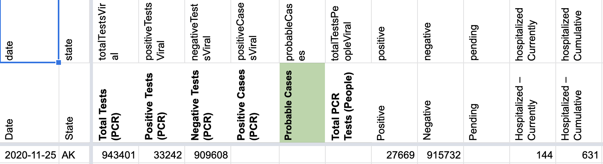

AFTER:
 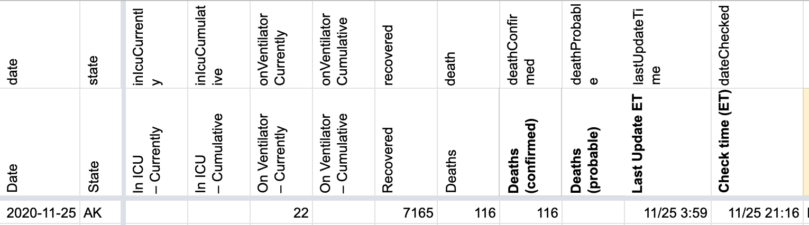
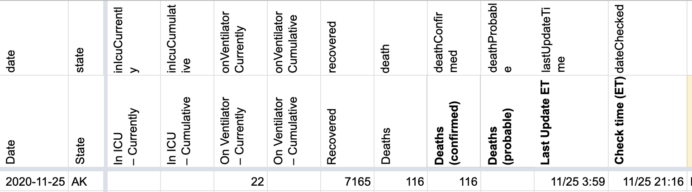
#957: [AK] Patch late 11/17 update
Issue number 957
hmhoffman opened this issue on November 17, 2020, 8:17 PM PST
State: AK
Dates affected: 11/17
Describe the issue: On 11/17 AK updated their data after we published. We should patch this late update.
Comments
BEFORE:

AFTER: 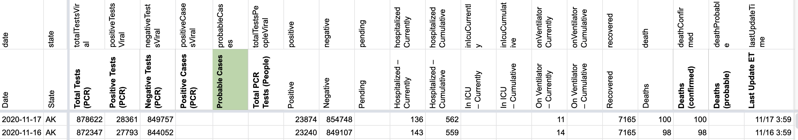
All metrics were patched except for recoveries which did not appear on the dashboard.
#956: [AK] Alaska hospitalizations and cases changes
Issue number 956
muamichali opened this issue on November 16, 2020, 11:06 AM PST
Labels Data quality stale
State or US: Alaska
Describe the problem
Previously, we did not capture cumulative hospitalizations.
Previously, we captured both residents and non residents in cases. This removes non residents to comply with federal case reporting guidelines and match our policy in Florida.
Previously, we copied the positives values from Cases (Confirmed and Probable) to Positive Cases (PCR) but since the cases value lumps probables and confirmeds we are zeroing out the timseries.
Steps
- Backfill cumulative hospitalizations from data on Alaska's dashboard from 3/6 - 11/15
- Remove non residents from cases for the whole time-series
- Update calculated negatives to reflect the change in positives
- Remove timeseries of Positive Cases (PCR) since the cases values lump confirmed and probable cases
Link to data source https://coronavirus-response-alaska-dhss.hub.arcgis.com/
Comments
This issue has been automatically marked as stale because it has not had recent activity. It will be closed if no further activity occurs. Thank you for your contributions!
#954: [AK] Fix mistake in 11/6 timestamp
Issue number 954
hmhoffman opened this issue on November 16, 2020, 8:32 AM PST
State: AK
Dates affected: 11/6
Describe the issue: On 11/6 the date in the timestamp was incorrectly input as 11/7 but should have been 11/6.
Comments
BEFORE: 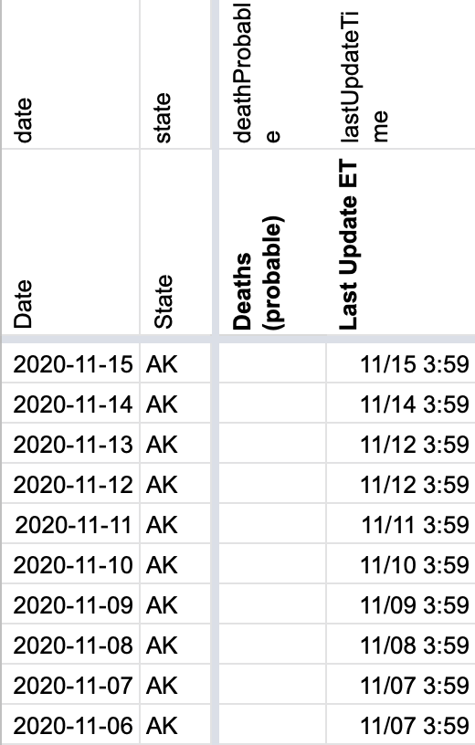
AFTER: 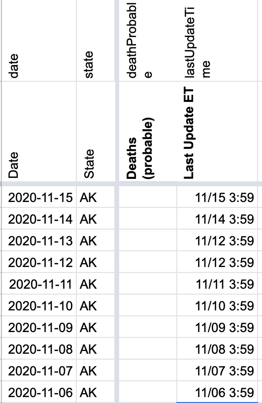
#945: [AK]Wrong timestamp was entered for Alaska's lastUpdateEt
Issue number 945
muamichali opened this issue on November 11, 2020, 8:40 AM PST
Labels Data quality stale
State or US: Alaska
Describe the problem The checker on 11/10 entered 11/10 as the date instead of 11/9
Link to data source
Comments
This issue has been automatically marked as stale because it has not had recent activity. It will be closed if no further activity occurs. Thank you for your contributions!
This issue has been closed because it was stale for 15 days, and there was no further activity on it for 10 days. You can feel free to re-open it if the issue is important, and label it as "not stale."
#939: [AK] Patch 11/7 PCR Testing numbers
Issue number 939
hmhoffman opened this issue on November 8, 2020, 1:43 PM PST
State: AK
Dates affected: 11/7
Describe the issue: On 11/7 AK announced that their testing dashboard would be down from 11/6-11/9. We updated total tests pcr, pos. tests pcr, and neg. tests pcr from their testing data summary tables. However on 11/8, we made the decision to freeze these metrics until 11/9 when we will hopefully have more clarity. Reverting total tests pcr, pos. tests pcr, neg. tests pcr, and neg. cases to 11/6 numbers.
Comments
BEFORE: 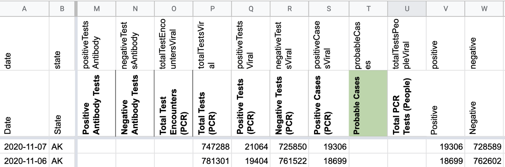
AFTER: 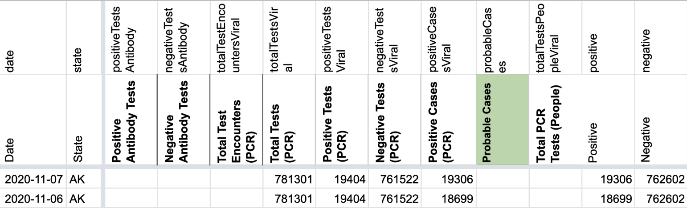
#668: [AK]july 16 report
Issue number 668
muamichali opened this issue on July 23, 2020, 10:09 PM PDT
Labels Data quality
State or US: alaska
Link to data source
Provide links to original data sources that we can
 refer to, like a state COVID website.
refer to, like a state COVID website.
Comments
I believe this is already referenced in issue #640 , as all the non-resident cases up to 16 JUL were added in bulk to that date. The necessary data to backfill the nonresident cases into the total cases is available in this CSV: https://opendata.arcgis.com/datasets/f34c6b1e58f34939bb6d2d721eb7a1e7_0.csv
#640: [AK] Non resident cases in Alaska
Issue number 640
space-buzzer opened this issue on July 16, 2020, 10:01 PM PDT
Labels Backfill Historical Data Missing Data stale
Alaska reports non residents separately from cases

Alaska has a case-line data table for the out of state table, with their "report date". This is a time series built from this data
Comments
In case folks are interested in viewing the data directly, here's the source: https://coronavirus-response-alaska-dhss.hub.arcgis.com/datasets/covid-cases-out-of-state
The CSV linked below updates daily with the non-resident cases: https://opendata.arcgis.com/datasets/f34c6b1e58f34939bb6d2d721eb7a1e7_0.csv
This issue has been automatically marked as stale because it has not had recent activity. It will be closed if no further activity occurs. Thank you for your contributions!
This issue has been automatically marked as stale because it has not had recent activity. It will be closed if no further activity occurs. Thank you for your contributions!
This issue has been automatically marked as stale because it has not had recent activity. It will be closed if no further activity occurs. Thank you for your contributions!
This issue has been closed because it was stale for 15 days, and there was no further activity on it for 10 days. You can feel free to re-open it if the issue is important, and label it as "not stale."
#611: [AK] PCL Cases Historicals
Issue number 611
pscsharon opened this issue on July 13, 2020, 6:44 AM PDT
Labels Backfill Missing Data PCL/SVP Historicals
Alaska has been reporting Confirmed Cases. Please backfill the Confirmed Cases.
Background:
In WS2, we do not populate Positive Cases (PCR) which feeds column V in States Daily.

So, column V in States' Daily is blank.

It appears we said cases were unclear if they are distinct or lumped. From re-review of their testing guidance on arcgis, I believe now it is lab-confirmed. Refer to questions 1 in this linked PDF. https://coronavirus-response-alaska-dhss.hub.arcgis.com/datasets/cases-and-testing-frequently-asked-questions
Comments
AK confirmed to report only lab-confirmed cases. WS2 pop-ups was also modified to account for this.
States daily corrected, values in C also added to V.
Before:
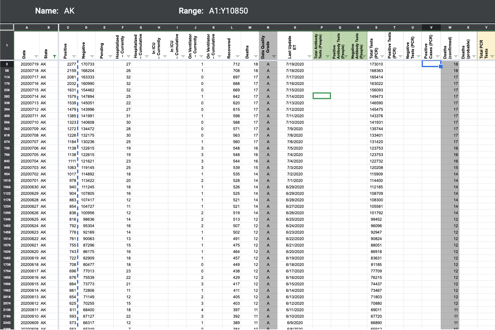
After:

#579: [AK] Histoicals 7/5 update was missed by pub shift
Issue number 579
muamichali opened this issue on July 6, 2020, 12:12 PM PDT
Labels Data quality
BEFORE

AFTER

Comments
Hey @muamichali, would this update be for July 6? I checked out two of the AK press releases below. This is what I think should be the updated for July 6:
- Total Tests (PCR): 128330
- Positive Cases: 1166
- Negative: 128330 - 1166 = 127164
- Currently Hospitalized: 25
- Currently on Ventilator: 2 Recovered: 552
- Deaths: 16
CASE COUNT SUMMARY, Sunday, July 5, 2020 DHSS today announced 32 people with COVID-19 in Alaska. 27 are residents in four communities: Anchorage (22), Fairbanks (2), Seward (2) and Palmer (1). The total number of Alaska cases is now 1,138.
CASE COUNT SUMMARY, Monday, July 6, 2020 DHSS today announced 30 people with COVID-19 in Alaska. 28 are residents in seven communities: Anchorage (19), Fairbanks (3), North Pole (2), Kenai (1), Seward (1), Sterling (1) and Wasilla (1). The total number of Alaska cases is now 1,166.
Per Slack thread, we updated July 5 already. Closing this issue.
#429: AK - Systemic issues after retroactive State count updates
Issue number 429
scarson opened this issue on May 17, 2020, 6:17 PM PDT
The CTP AK data has significant divergences from the official AK state data now. The two main issues in the CTP data are off-by-a-day errors and low/no-reporting data where some days' data is missing and aggregated into the next day. The latest official AK state data does not have these gaps. Recommend re-pulling and replacing CTP data with official AK data. Excel sheet with AK official data pulled 5/17: https://drive.google.com/file/d/1OU65DQDNgsglxK38SIL0uu4OaDBSTGqf/view?usp=sharing
Examples: Missed day: April 29-30 & May 1
- CTP New Tests -- 4/29: 2,030 -- 4/30: 0 -- 5/1: 1,206
- AK Official -- 4/29: 441 -- 4/30: 749 -- 5/1: 1,070
Off-by-one: May 1-3:
- CTP New Tests -- 5/1: 1,206 -- 5/2: 1,074 -- 5/3: 179
- AK Official -- 5/1: 1,073 -- 5/2: 179 -- 5/3: 145
CTP first reported AK death: 4/25 AK official first reported death: 4/16
@thaynedye @dcmoyer
Comments
This issue has been automatically marked as stale because it has not had recent activity. It will be closed if no further activity occurs. Thank you for your contributions!
Hi @scarson, Thanks for reporting this issue (and for reporting similar issues with CA, #431 - #433, which I responded to a few days ago). We've been discussing policy on day lags since then and decided that in order to increase the meaningfulness of the historical time series, we will be updating to correct them. I've just checked and AK is on our running list to update with high priority.
#428: AK 4/13 - Incorrect data - Negative new tests and total negatives
Issue number 428
scarson opened this issue on May 17, 2020, 5:27 PM PDT
Labels not stale
The state must have adjusted the values down that day. Cannot have negative 208 new tests or a decrease in total negatives.
The official state records show 67 new tests on the day that the state reached 277 cumulative positives. This number was added to the previous day's total and the negatives were calculated from that. AK official state data as of 5/17 pulled into Excel sheet for easy comparison: https://drive.google.com/file/d/1OU65DQDNgsglxK38SIL0uu4OaDBSTGqf/view?usp=sharing
Change:
- New Tests = 67
- Negative = 7828.
@thaynedye @dcmoyer
Comments
This issue has been automatically marked as stale because it has not had recent activity. It will be closed if no further activity occurs. Thank you for your contributions!
This issue has been closed because it was stale for 15 days, and there was no further activity on it for 10 days. You can feel free to re-open it if the issue is important, and label it as "not stale."
#255: AK Death Issu
Issue number 255
thaddeuspompidou opened this issue on April 22, 2020, 11:26 AM PDT
For AK in historical data on 2020/03/24 the death property does not exist
Comments
Hi @thaddeuspompidou
We will update the data on our end from nothing to zero so it will be visible in the API. The change should be reflected tomorrow afternoon.
Before 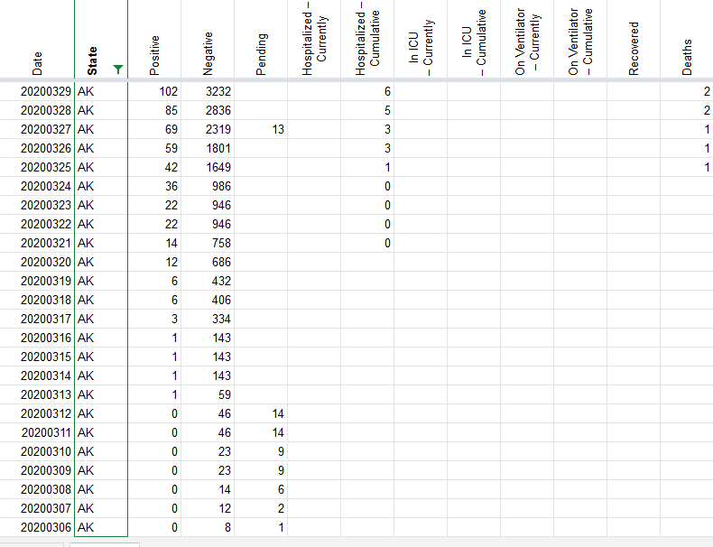
After 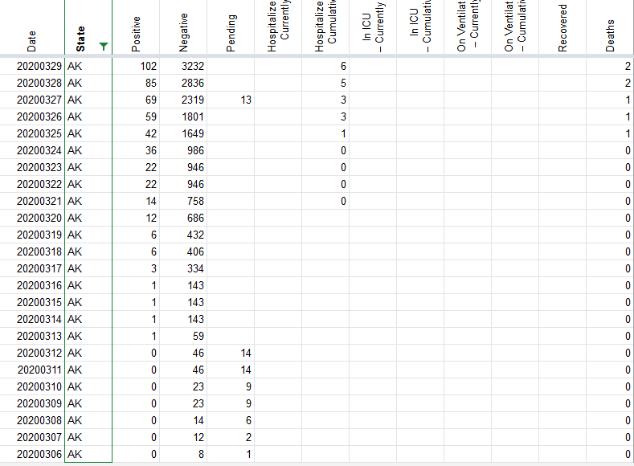
#221: April 13 AK Has Negative Adjustment for Negative Results ["-213] & Negative Adjustment for Total Tests ["-205"]
Issue number 221
biffmaddogtannen opened this issue on April 18, 2020, 6:59 PM PDT
Labels stale
Comments
This issue has been automatically marked as stale because it has not had recent activity. It will be closed if no further activity occurs. Thank you for your contributions!
This issue has been closed because it was stale for 15 days, and there was no further activity on it for 10 days. You can feel free to re-open it if the issue is important, and label it as "not stale."
#41: AK, DC, ID, MI, NY, NV have non-cumulative results
Issue number 41
nickblink opened this issue on March 23, 2020, 4:43 AM PDT
Labels Data quality stale
For DC and NV, there is a day when positive tests decrease from the previous day. For the other four states, there are days when negative tests decrease.
Thanks for putting this together!
Comments
Uploading a spreadsheet of all decreases (more than documented previously), current as of today: covidtracking_problemdates.xlsx
States affected: AK, AL, AZ, CO, DC, DE, FL, HI, IA, KS, MA, MD, MI, NJ, NM, NV, NY, OH, OK, PR, RI, SC, WI
This is my R code to calculate new cases and pull records that decreased from the prior day (any variable) AND the prior day's row for comparison:
library(tidyverse)
covidtracking %>%
arrange(state, date) %>%
group_by(state) %>%
mutate_at(vars(c("positive", "death", "total")),
list(new = ~ coalesce(. - lag(.), .))) %>%
filter_at(vars(ends_with("new")), any_vars(. < 0 | lead(.) < 0)) %>%
ungroup()
I wonder if the problem is an error in the data source in which corrections for prior day results are included as adjustments on the day the error was discovered. This is common in the banking world because of the value of keeping past transactions immutable. It's poor practice for scientific data, however, because the test counts on a given day matter.
If the problem is deferred adjustment, the idea solution is to inform the data sources and ask for better quality data. Short of that, an corrective approach is to reverse the error to the best extent that the data allows: Where a daily result is negative, set that day to zero, and decrease the count of the previous day by the corresponding amount.
Such a correction would not be perfect since (a) you don't know for sure whether the error was from the previous day versus earlier and (b) it doesn't correct any of the cases where adjustments didn't cause negative result. Still, it leads to better data quality than making no correction and avoids the confusion of negative daily counts.
Hello, and thank you for helping us clean our data. Please see the following:
New York:
- [ ] 3/7 to 3/8 the total changed due to pending tests no longer being reported.
- [ ] 3/10 to 3/11 should be correct

Oklahoma
- [ ] 3/20 to 3/21 the variance in totals is tied to the unreliable Pending category. It may be that the data point was phased out and our data was affected by this transition;
Ohio
- [ ] 3/16 to 3/17 variation in data is due to Pending data no longer being published.

New Jersey
- [ ] 3/16 is infact incorrect:

- [ ] corrected

Hawaii
- [ ] Pending for 3/19 decrease per the state

Michigan stopped reporting pending data as of 3/17
Kansas stopped reporting pending data as of 3/11

Iowa stopped reporting pending data as of 3/14 Deleware stopped reporting pending data as of 3/17 DC has fluctuating pending data 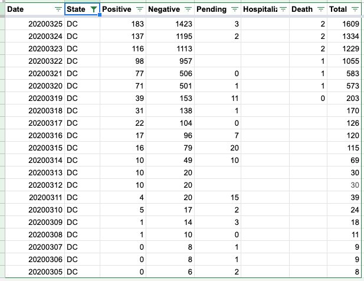
Thank you for these clarifications, @careeningspace, and for working on providing these data so accessibly! In terms of cleaning up these records for use:
- Has the NJ correction been applied to the live data?
- Given the inconsistencies with pending data, do you foresee any problems with subtracting pending cases from the totals?
The NJ correction should be in the live feed. Going forward, our API will no longer be focusing on including Pending in our "Total". You can find more detail on our API Page
- [ ] totalTestResults - Calculated value (positive + negative) of total test results.
- [ ] total - DEPRECATED Will be removed in the future. (positive + negative + pending). Pending has been an unstable value and should not count in any totals.
As for subtracting historical "Pending" data - if you want a clean Total, you can sum Positive and Negative.
Great, thanks. That fixes problems in many states and leaves only AK, DC, HI, ID, KY, MI, NV, and SC with negative "increases": covidtracking_problemdates.xlsx
covidtracking %>% arrange(state, date) %>% group_by(state) %>% filter_at(vars(ends_with("Increase")), any_vars(. < 0 | lead(.) < 0)) %>% ungroup()
-[ ] Alaska has a period of data flux that needs more research 3/17 - 3/19:
Data Log:

Daily Report:

State Data from 3/17 14:09 ET: 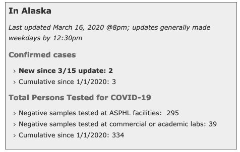
State Data from 3/17 18:00 ET:

State Data from 3/18:

Updated Daily after correction:

District of Columbia 3/10 - 3/11
- [ ] We do not have screen grabs from this time period
- [ ] It looks like DC changed how they were reporting data. I am going to make both days match
DC Before update:

DC after update: 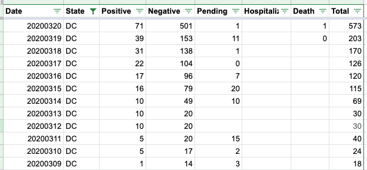
-
[ ] ID has an issue with a change in data from 3/18 to 3/19

-
[ ] Screen cap of State Data from 3/18 14:04:

-
[ ] Screencap of State Data from 3/19 14:04:

-
[ ] The positives increase, while the total tests reported did not. Our methodology is to leave the negatives unchanged in this case. Fixed data below:

This issue has been automatically marked as stale because it has not had recent activity. It will be closed if no further activity occurs. Thank you for your contributions!
This issue has been closed because it was stale for 15 days, and there was no further activity on it for 10 days. You can feel free to re-open it if the issue is important, and label it as "not stale."
Rows edited: 1 AK 2021-02-26 positive: 55989 (was 55886) hospitalizedCurrently: 43 (was 45) hospitalizedCumulative: 1277 (was 1271) totalTestsViral: 1679675 (was 1671043) positiveTestsViral: 67580 (was 67403) negativeTestsViral: 1610023 (was 1601583) lastUpdateTime: 2021-02-26 08:59:00+00:00 (was 2021-02-25 08:59:00+00:00)